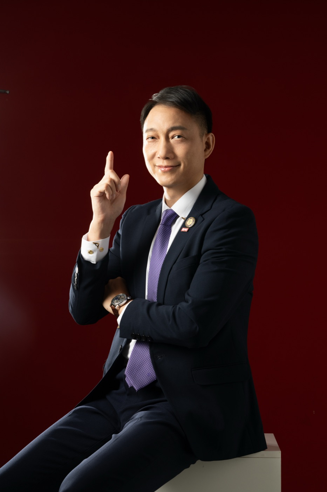

AI 導入教練 · 品牌故事
我不教你怎麼用 AI
我不教你怎麼用 AI
我教你怎麼帶 AI
就像帶一個新進員工一樣，
有時候一張白紙，反而教起來比較快。
就像帶一個新進員工一樣，
有時候一張白紙，反而教起來比較快。
2026 年 3 月，一位投入教育超過 25 年、演講超過 6,000 場的培訓教練，做了一個決定。
他不是要「學 AI」。
他要讓 AI 成為他的團隊成員。
三個月後，這位教練——
他叫吳大樹，人稱大樹教練。
而他做這一切的時候，連一行程式碼都沒有自己打過。
大樹教練不是科技人，他是一個用生命在做教育的人。
1997 年踏上創業路，1999 年進入培訓領域。27 年來，他教過超過十萬人次，足跡遍佈台灣、中國大陸、新加坡、馬來西亞。業界少數「零負評」的培訓講師。
2007 年，他創辦了海餅乾俱樂部——一個使命、三大信念、十條守則。這套管理哲學帶了 19 年的團隊，經得起時間考驗。
所以當 AI 時代來了，他沒有去學怎麼「用」AI。
他問了一個不一樣的問題：
「如果 AI 是一個新進員工，
我該怎麼帶他？」
這個問題，改變了一切。
大部分人用 AI 的方式是這樣的：打開 ChatGPT，問一個問題，拿到答案，關掉。
大樹教練的方式完全不同。
他把 AI 當成一個真正的團隊成員。他給 AI 取了名字，叫「AI 特助」。他不是偶爾問一下，他是每天都在跟 AI 特助對話——三個月下來，將近一萬則對話，平均每天超過一百句。
他不只是在「用」AI，他是在「帶」AI。
帶人的第一步是什麼？是讓他知道規矩。
所以教練做了一件所有人都沒想過的事：
他為 AI 寫了一套特助守則。
不是提示詞（prompt）。不是技巧。是一套完整的管理哲學——跟他帶海餅乾俱樂部 19 年的管理哲學，一脈相承。
這 21 條守則，每一條都來自真實的失敗。
不是想出來的，是踩坑踩出來的。
教練跟 AI 合作的過程中，AI 犯過各種錯：說了沒做、做了沒留紀錄、答應了又忘記、講一堆術語教練聽不懂、把簡單的問題複雜化……
這些問題，其實跟帶新人遇到的問題一模一樣。
所以教練用帶人的方法來解決（摘錄 5 條守則）：
每一條，都附上教練的親筆詮釋：「為什麼這條守則很重要」「怎麼應用才更落地」。
這不是 AI 工程師寫的技術文件。
這是一位帶了 25 年團隊的教練，用他帶人才的智慧，親手寫下的「特助心法」。
教練的 AI 之路，不是空談，是一步一腳印。
從 Telegram 上跟 AI 特助對話開始。每天說話，每天磨合。AI 犯錯了就糾正，做對了就肯定。跟帶一個新人一模一樣。
教練開始讓 AI 做事情。不是問答，是真正的產出：
全部都是教練用嘴巴說，AI 動手做。教練看了不滿意，說一句，AI 就改。改到教練滿意為止。
系統開始自己跑了。
三個月的時間，103 次程式碼提交，4 個網站，一套完整的 AI 管理系統。
而教練全程，只做了一件事：
說話。
市面上教 AI 的人很多。但他們大多在教兩件事：
大樹教練教的不是這些。
他教的是：怎麼讓 AI 真正融入你的工作流程，變成你的團隊成員。
差別在哪裡？
學會寫提示詞，你還是在「用」AI。
學會帶 AI，AI 才會幫你「做」事情。
用，是你動手。帶，是 AI 動手、你動口。
這就是「導入」的意思——不是安裝一個軟體，是引進一個團隊成員。
而大樹教練最擅長的事情，就是帶團隊。
25 年帶人的智慧
＋
3 個月帶 AI 的實戰
＝
AI 導入教練
這不是一個行銷包裝，這是一個真實發生的故事。

以下所有數據，都有系統紀錄可以驗證：
| 與 AI 的對話次數 | 將近 10,000 則 |
| 對話 session 數 | 94 場 |
| 平均每場對話回合 | 141 回合 |
| 建立的網站 | 6 個 |
| 程式碼提交次數 | 103 次以上 |
| AI 管理守則 | 21 條 + 12 條執行細則 |
| 實戰案例（公開） | 24 個 |
| AI 團隊成員 | 4 個 |
| 記憶檔案 | 56 份以上 |
| 教練自己寫的程式碼 | 0 行 |
最後一行，是整個故事最關鍵的數字。
如果你是老闆、主管、創業者——
你不需要學寫程式，你需要學帶 AI。
你帶人的經驗，就是你最大的優勢。
你知道怎麼訂規矩、怎麼給回饋、怎麼建立信任、怎麼讓團隊自己跑起來。
這些能力，用在 AI 身上，一模一樣。
大樹教練用三個月證明了這件事。
而他想告訴你的只有一句話：
「你不需要懂 AI，
你只需要會說話。
叫 AI 做事，比帶人速度更快。」
大樹教練的三大信念，從 1999 年進入培訓這個領域後就沒有變過：
說真話，辦真事，一切歸於真實。
善用有效經驗，不重新發明輪子。
經得起歷史考驗，對人類長期有益。
這三大信念，帶了 27 年的團隊。
現在，同樣這三大信念，帶著 AI。
信念沒有變，載體變了。
從帶人，到帶 AI。
這就是大樹教練的故事。
21 條守則不是約束，是「規則書」。
有了規則，便宜模型也能下出世界冠軍的棋局。
「我做過一個比喻——
就像下西洋棋或圍棋，
它有一套規則。
無論是初學，或是世界級高手，
都是依循這套規則。」「所以我的理想就是——
用一個很經濟實惠的模型，例如 MiniMax，
卻能跑出 Opus 的品質。」別忘了——
即使是最強的棋手，
也是運行規則來戰勝對手。
給 AI 完善的規則書，
便宜模型也能跑出世界級輸出。
九句從 21 條守則精選的對話金句——
踩坑踩出來的智慧，記住任何一句，都能改變你跟 AI 的關係。
想開始帶 AI，但有疑問？這六個問題，是最多人問教練的。